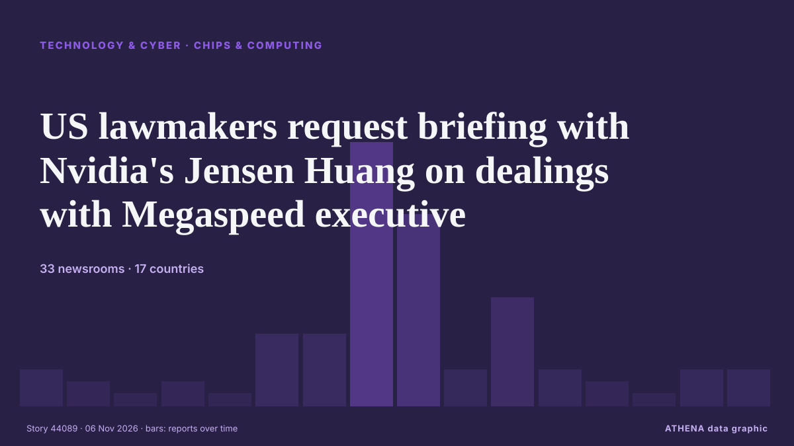

الرقائق والحوسبة
برعايةبرعاية  Cybernetics and Artificial Intelligence Lab Welcome to the Cybernetics and Artificial Intelligence Laboratory, established at the Department of Business Administration of the National and Kapodistrian University of Athens. The lab is headed by Professor Dimitrios Thomakos. The lab aims to do research that can be published in top venues. Our research uses tools and methods of Artificial Intelligence, and lies in the following areas: - Forecasting - Decision making - Cyber security - Finance We are always looking forward to collaborating with exceptional students!
Cybernetics and Artificial Intelligence Lab Welcome to the Cybernetics and Artificial Intelligence Laboratory, established at the Department of Business Administration of the National and Kapodistrian University of Athens. The lab is headed by Professor Dimitrios Thomakos. The lab aims to do research that can be published in top venues. Our research uses tools and methods of Artificial Intelligence, and lies in the following areas: - Forecasting - Decision making - Cyber security - Finance We are always looking forward to collaborating with exceptional students!
| 24 أكتوبر | 0 |
|---|---|
| 25 أكتوبر | 0 |
| 26 أكتوبر | 0 |
| 27 أكتوبر | 0 |
| 28 أكتوبر | 0 |
| 29 أكتوبر | 0 |
| 30 أكتوبر | 0 |
| 31 أكتوبر | 0 |
| 1 نوفمبر | 0 |
| 2 نوفمبر | 0 |
| 3 نوفمبر | 3 |
| 4 نوفمبر | 3 |
| 5 نوفمبر | 3 |
| 6 نوفمبر | 0 |
تُعرض العناوين بالإنجليزية كما نُشرت.

US lawmakers request briefing with Nvidia's Jensen Huang on dealings with Megaspeed executive
Nvidia CEO Jensen Huang warned that Europe risks falling further behind the US and China in artificial intelligence, despite its industrial base and technical talent. من DigiTimes Asia
Qualcomm’s smartphone chip sales miss estimates, shares fall
Adjusted sales in Q4 fell 7% to US$10.44 billion, beating estimates of US$10.11 billion. من The Business Times
AMD smashes Q3 consensus on 97% data center growth
Advanced Micro Devices (AMD) stock bumped up 7% afterhours on Tuesday as the chipmaker posted third-quarter beats to the Wall Street estimates. من FXStreet
Emirates SkyCargo launches AI Tech to fly server racks, chips and GPUs
Emirates SkyCargo has a new product for companies building out artificial intelligence. من The Next Web
SK Hynix’s New York chip plans hit snag over US restrictions on China, sources say
U.S. officials have held up approval for American chipmaking equipment needed by SK hynix to expand production in China, complicating the Korean chipmaker's plans for new memory-chip plants in New… من The Korea Times